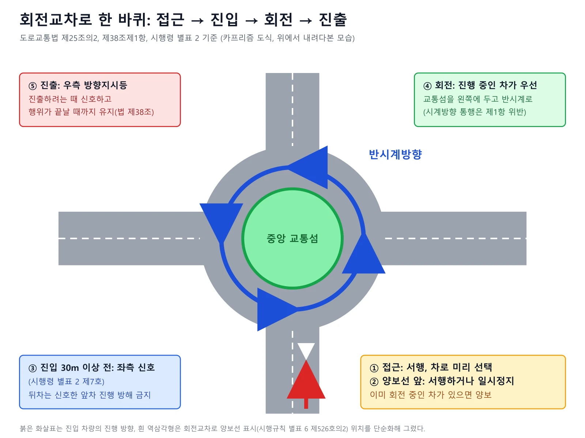
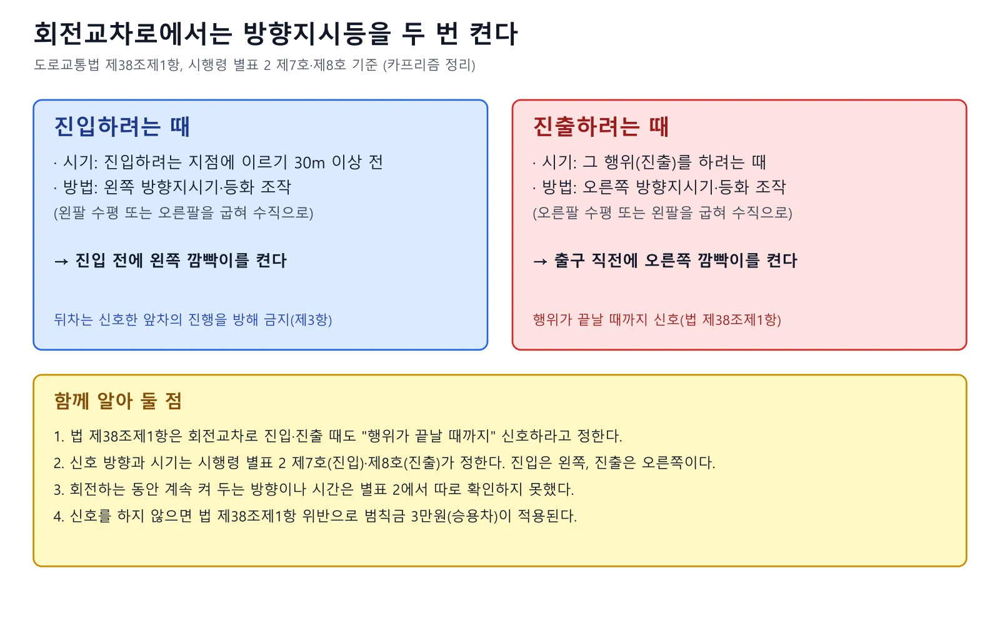
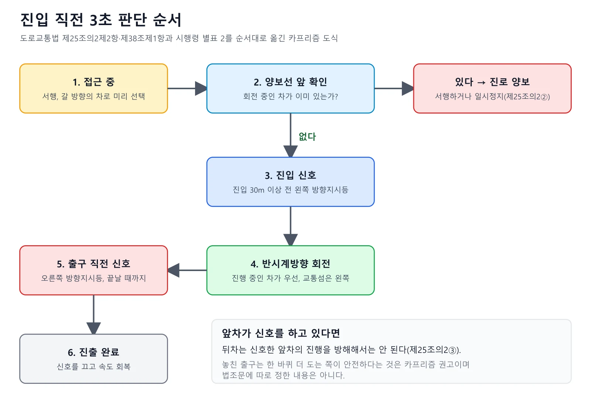
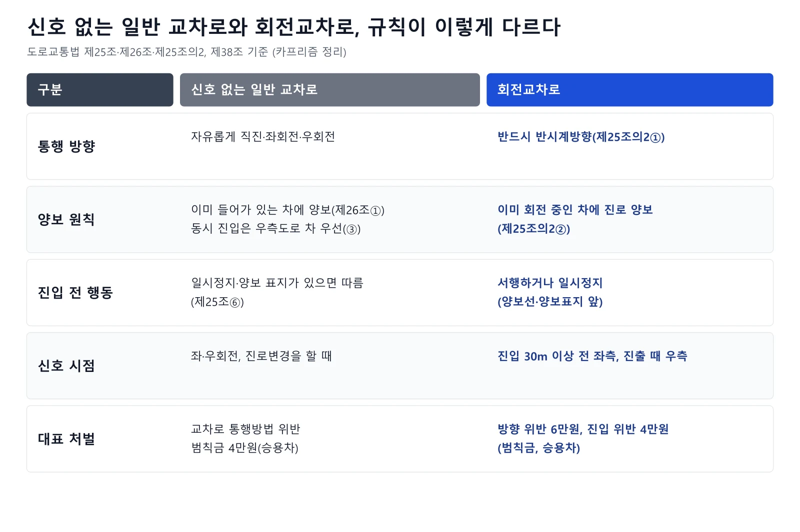
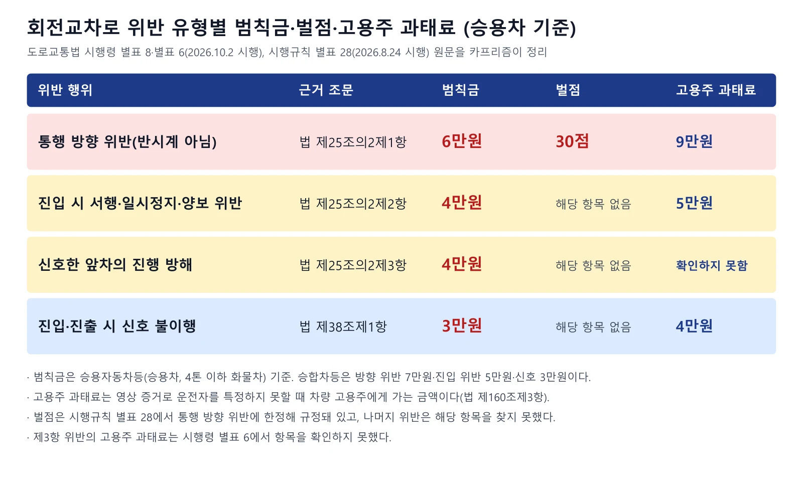
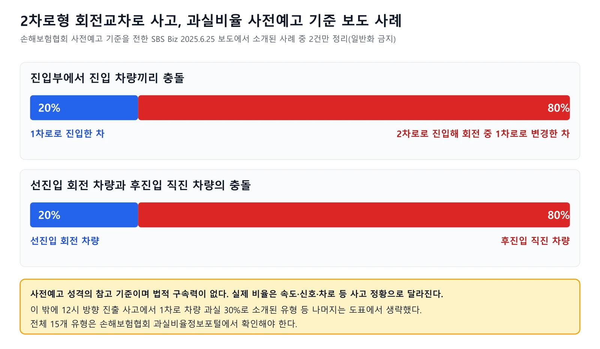

▲ 충북 옥천군 하계리 회전교차로 진입로(매동로에서 촬영). 붉은 포장 진입로에 삼각형 노면표시가 있고 회전교차로 방향 안내표지판이 서 있다 ⓒ LandAndTree · CC0 · 위키미디어 커먼즈
"회전교차로에선 나는 어느 쪽 깜빡이를 켜야 하지?" 이 질문에 바로 답이 안 나온다면 이 글이 도움이 된다. 2026년 10월 12일 기준으로 국가법령정보센터 Open API에서 도로교통법(시행 2026.7.1), 같은 법 시행령(시행 2026.10.2), 시행규칙(시행 2026.8.24) 원문을 내려받아 조문을 대조했다. 과실비율과 국토교통부 캠페인 내용은 법령이 아니라 언론 보도를 근거로 했고, 확인하지 못한 항목은 "확인하지 못했다"로 적었다. 신호 없는 교차로 전반은 신호 없는 교차로 우선순위 기사, 깜빡이 단속 일정과 벌점 신설 추진은 방향지시등 단속 기사, 우회전 일시정지는 우회전 일시정지 기사에서 다뤘으므로, 이 글은 회전교차로 한 곳의 조문과 처벌, 사고 때 과실에 집중한다.
1. 법이 정한 회전교차로 규칙 — 제25조의2 세 항
회전교차로는 법적으로 "원형의 교통섬을 중심으로 반시계방향으로 통행하도록 한 원형의 도로"다. 도로교통법 제2조제13호의2는 회전교차로를 교차로 중 차마가 원형의 교통섬을 중심으로 반시계방향으로 통행하도록 한 원형의 도로로 정의한다. 통행방법은 제25조의2로 따로 정해 두었고, 이 조문은 2022년 1월 11일 개정으로 신설된 것으로 법령 원문에 표기돼 있다(본조신설 2022.1.11).
| 항 | 의무 내용 | 쉬운 해석 |
|---|---|---|
| 제1항 | 모든 차의 운전자는 회전교차로에서는 반시계방향으로 통행하여야 한다 | 가까운 출구가 바로 앞이어도 시계방향으로 가로지르지 않는다 |
| 제2항 | 회전교차로에 진입하려는 경우에는 서행하거나 일시정지하여야 하며, 이미 진행하고 있는 다른 차가 있는 때에는 그 차에 진로를 양보하여야 한다 | 진입 전에는 속도를 줄이고, 안에서 돌고 있는 차가 있으면 먼저 보낸다 |
| 제3항 | 제1항·제2항에 따라 통행을 위해 손이나 방향지시기 또는 등화로 신호를 하는 차가 있는 경우 그 뒤차의 운전자는 신호를 한 앞차의 진행을 방해하여서는 아니 된다 | 깜빡이를 켜고 진입·진출하려는 앞차를 뒤에서 밀어붙이거나 끼어들지 않는다 |
"서행"은 법 제2조제28호가 "운전자가 차를 즉시 정지시킬 수 있는 정도의 느린 속도로 진행하는 것"으로, "일시정지"는 제30호가 "바퀴를 일시적으로 완전히 정지시키는 것"으로 정의한다. 제2항의 "서행하거나 일시정지"는 둘 중 하나를 고르라는 문장이므로, 안에 회전 중인 차가 없고 즉시 멈출 수 있을 만큼 속도를 낮췄다면 반드시 완전히 멈춰야 하는 것은 아니다. 다만 이미 진행하는 차가 있으면 양보 의무가 우선하므로, 그 차의 진행을 막을 상황이라면 멈추는 수밖에 없다. 조문 전체는 아래 버튼으로 확인할 수 있다. 국가법령정보센터 도로교통법 바로가기

▲ 회전교차로는 접근 때 서행하고, 양보선 앞에서 회전 중인 차에 양보한 뒤, 반시계방향으로 돌아 출구 앞에서 오른쪽 신호를 켜는 순서로 이용한다 ⓒ 카프리즘 제작 도표 (도로교통법 제25조의2·제38조, 시행령 별표 2)
이 규칙은 "모든 차"에 적용된다. 승용차뿐 아니라 화물차와 버스, 이륜차, 자전거도 같은 조문의 적용 대상이다. 다만 자전거나 개인형 이동장치(PM)의 구체적 처벌 금액은 이 글에서 확인하지 않았다.
2. 진입하는 순간 — 서행, 양보선, 그리고 "이미 진행 중인 차"
진입의 핵심은 속도를 줄이고, 안에 있는 차를 먼저 보내는 것이다. 국토교통부가 2024년 3월 21일부터 4월 30일까지 관계기관과 벌인 회전교차로 캠페인을 전한 보도(뉴스서울, 2024.3.20)에 따르면 접근할 때 서행하고 차로를 미리 선택하며, 진입할 때는 회전 중인 차가 우선이라고 안내됐다. 같은 보도는 한국교통연구원 조사에서 회전교차로 통행방법을 정확히 아는 운전자가 약 36%에 그쳤고, 회전교차로 안 교통사고가 매년 약 1천 건에 달한다고 전했다. 뉴스서울 보도 바로가기
▲ 충남 천안시 서북구 성환읍의 소형 회전교차로. 잔디가 심긴 중앙 교통섬을 두고 도로가 갈라지며, 차는 이 섬을 왼쪽에 두고 반시계방향으로 돈다 ⓒ LandAndTree · CC BY 4.0 · 위키미디어 커먼즈
진입로에서 볼 수 있는 시설
시행규칙 별표 6(안전표지의 종류, 만드는 방식 및 설치·관리기준)에는 회전교차로 전용 노면표시가 따로 있다. 제526호의2 "회전교차로 양보선 표시"는 "회전교차로에 진입하려는 차량이 양보해야 할 지점을 표시하는 것"이고, 설치 장소는 "회전교차로에 진입할 경우 양보해야 할 지점"이다. 이때 양보표지(일련번호 228)를 회전교차로에 진입하는 지점 우측에 함께 설치하도록 정하고 있다. 즉 진입로 오른쪽에 양보 표지판이 있고 바닥에 양보선이 그려져 있다면, 그 선이 "여기서 안쪽 차를 먼저 보내라"는 위치다. 별표 6에는 주의표지 109 "회전형교차로표지"도 있으나, 설치 조건은 도로에서 비교적 속도를 낼 수 있거나 전망이 나쁜 도로의 교차로에서 볼 수 있는 거리가 일정 기준보다 짧은 경우로 적혀 있어 모든 회전교차로 앞에 있는 표지는 아니다.
📍 2022년 설계지침 개정안에 진입로 "양보" 표시 반영
국토교통부가 2022년 5월 발표한 회전교차로 설계지침 개정안을 전한 보도(이투데이, 2022.5.1)에 따르면 모든 유형에 높이 10cm의 고원식 횡단보도를 의무화해 회전교차로 안 30km/h 이하 주행을 유도하고, 진입 차로에 "양보" 문구 표시를 넣어 회전 차량의 우선권을 강조하며, 진출방향 표시를 추가한다고 소개됐다. 시범 설치한 충북 청주시 3개소에서는 진입속도가 19.4km/h에서 14.7km/h로 24.2% 줄었다는 수치도 나왔다. 이는 지침 개정안 발표 당시 보도이고, 최종 확정본의 세부 기준은 이번 조사에서 확인하지 못했다. 이투데이 보도 바로가기
"이미 진행하고 있는 다른 차"는 누구인가
법 제25조의2제2항은 "이미 진행하고 있는 다른 차"라고만 적었다. 회전부 안에 이미 들어와 돌고 있는 차량이 해당한다는 것이 조문 문언의 자연스러운 해석이고, 앞 단락의 국토교통부 캠페인도 "회전 차량 우선"으로 안내했다. 진입로에서 양보선을 막 넘은 다른 진입 차량끼리의 우선순위는 이 조문만으로 정해지지 않는데, 이 경우는 아래 5장의 과실비율 도표처럼 사고가 났을 때 사례별로 판단된다.
3. 회전 중과 진출 — 깜빡이는 두 번, 방향은 반대
회전교차로에서 신호는 진입 때 왼쪽, 진출 때 오른쪽이다. 법 제38조제1항은 "회전교차로에 진입하거나 회전교차로에서 진출하는 경우에는 손이나 방향지시기 또는 등화로써 그 행위가 끝날 때까지 신호를 하여야 한다"고 정하고, 제2항이 신호의 시기와 방법을 대통령령에 맡긴다. 시행령 제21조는 이를 별표 2로 다시 위임하고, 별표 2는 다음과 같이 정한다.
| 구분 | 신호를 하는 시기 | 신호 방법 |
|---|---|---|
| 제7호 진입하려는 때 | 진입하려는 지점에 이르기 전 30미터 이상의 지점에 이르렀을 때 | 왼팔을 수평으로 펴서 차체의 왼쪽 밖으로 내밀거나 오른팔을 차체의 오른쪽 밖으로 내어 팔꿈치를 굽혀 수직으로 올리거나 왼쪽의 방향지시기 또는 등화를 조작할 것 |
| 제8호 진출하려는 때 | 그 행위를 하려는 때 | 오른팔을 수평으로 펴서 차체의 오른쪽 밖으로 내밀거나 왼팔을 차체의 왼쪽 밖으로 내어 팔꿈치를 굽혀 수직으로 올리거나 오른쪽의 방향지시기 또는 등화를 조작할 것 |

▲ 시행령 별표 2는 진입 신호를 "진입하려는 지점에 이르기 30미터 이상 전", 진출 신호를 "그 행위를 하려는 때"로 정한다 ⓒ 카프리즘 제작 도표 (시행령 별표 2 제7호·제8호)
한국교통안전공단이 회전교차로를 통행한 차량 1만 4,664대를 조사했더니 진입·진출 신호를 모두 정확히 쓴 차량이 1.9%였다는 내용은 앞서 방향지시등 단속 기사에서 다뤘다. 이 수치는 해당 기사가 인용한 내용이고, 이 글에서 원자료를 다시 확인하지는 않았다.
✅ 법조문만으로는 정해지지 않은 부분
· 회전하는 동안 어느 방향 깜빡이를 켜 둬야 하는지, 지시기를 언제 끄는지는 별표 2에서 확인하지 못했다
· 진입 신호 30m 기준은 속도가 느린 회전교차로 접근로에서는 사실상 "진입로에 들어서기 전에 켠다"는 뜻이다(카프리즘 해석)
· 신호를 했다고 양보 의무가 면제되지는 않는다. 신호는 의사 표시이고, 양보는 별도의 의무다(제25조의2제2항)

▲ 진입 직전에 머릿속으로 이 순서만 따라가면 양보·신호·방향 세 가지 의무를 한 번에 챙길 수 있다 ⓒ 카프리즘 제작 도표 (제25조의2제2항·제3항, 제38조제1항)
4. 일반 교차로와 무엇이 다른가
일반 교차로는 "누가 먼저 들어갔나"로, 회전교차로는 "누가 이미 돌고 있나"로 갈린다. 신호등이 없는 교차로에서는 법 제26조가 이미 들어가 있는 차에 양보(①), 동시에 들어가면 우측도로의 차에 양보(③), 좌회전 차는 직진·우회전 차에 양보(④)를 정한다. 반면 회전교차로는 제25조의2제2항이 진입하는 쪽에 일방적으로 서행·양보 의무를 지우고, 동시 진입 때 "우측 차 우선" 같은 규칙으로 해결하지 않는다.

▲ 일반 교차로는 진입 순서와 우측 차 우선이 핵심이고, 회전교차로는 방향과 회전 중인 차 우선이 핵심이다 ⓒ 카프리즘 제작 도표 (제25조·제26조·제25조의2)
| 상황 | 일반 교차로(신호 없음) | 회전교차로 |
|---|---|---|
| 두 차가 동시에 도착 | 우측도로 차에 양보(법 제26조③) | 회전 중인 차가 먼저, 진입 차는 양보(법 제25조의2②) |
| 좌회전하려는 차 | 직진·우회전 차에 양보(법 제26조④) | 교통섬을 돌아 반시계방향으로 나간다(좌회전이라는 개념 대신 3/4바퀴) |
| 우회전하려는 차 | 우회전 때 일시정지 등 별도 규정은 우회전 기사 참고 | 첫 번째 출구, 진입 때 신호 후 출구 앞에서 오른쪽 신호 |
| 방향지시등 | 방향 전환·진로변경 때 | 진입(왼쪽)과 진출(오른쪽) 모두(법 제38조①) |
5. 2차로형·대형차·"한 바퀴 더" — 법에 없는 부분과 국토부 안내
법 제25조의2는 회전 횟수나 차종을 구분하지 않는다. 2바퀴 이상 돌면 안 된다거나 대형차는 별도로 통행한다는 조항은 도로교통법·시행령·시행규칙에서 확인하지 못했다. 출구를 놓쳤을 때 한 바퀴 더 도는 것이 위반인지에 대한 직접 규정도 찾지 못했다. 이런 상황에서 중요한 것은 제25조의2제1항(반시계방향)과 제2항(양보)을 지키는 것이다. 한 바퀴를 더 도는 동안 계속 회전 차량 우선이 적용되므로 오히려 급하게 차로를 바꿔 출구로 빠지는 쪽이 위험하다는 점은 카프리즘의 권고이며 조문에 근거가 있는 것은 아니다.
차로 선택과 대형차 통행에 대한 국토교통부 안내
앞서 소개한 국토교통부 2024년 캠페인 보도에는 다음과 같은 안내가 담겼다.
| 구분 | 안내 내용 |
|---|---|
| 접근할 때 | 서행하고 미리 차로를 선택한다. 좌회전은 안쪽 차로, 우회전은 바깥쪽 차로 |
| 진입할 때 | 회전 차량이 우선이다 |
| 대형차(버스·화물차 등) | 회전교차로 안 화물차 턱 구간을 이용하되 인접 차선을 침범하지 않아야 한다 |
| 사고 과실 | 통행방법 준수 여부에 따라 과실비율이 크게 달라질 수 있다(예시로 20~80%가 제시) |
2022년 설계지침 개정안 보도에서는 2차로형 회전교차로가 문제로 꼽혔다. 설치 전후를 비교하니 소형·1차로형은 사고가 줄었는데 2차로형은 340건에서 341건으로 소폭 늘었고, 사고가 주로 회전부에서 났다는 내용이다. 이에 회전부에서 차로변경을 억제하는 차로축소형·나선형·차로변경억제형 세 유형의 설계기준을 새로 마련한다고 소개됐다. 따라서 2차로형 회전교차로에서는 진입 전에 갈 방향의 차로를 정하고 회전부 안에서는 차로를 바꾸지 않는 것이 핵심이다.
📍 대형차가 회전하다 옆 차로를 밟는 건 괜찮을까
국토교통부 안내는 화물차 턱 구간을 이용하되 "인접 차선을 침범하지 않아야 한다"고 했다. 이 문장은 캠페인 안내이고, 대형차의 구체적 통행 기준이나 위반 시 처벌을 따로 정한 조문은 이번에 확인하지 못했다. 소형차 운전자는 큰 차가 회전부에서 바깥으로 크게 돌고 안쪽 화물차 턱을 밟는 경우가 있다는 점을 염두에 두고 옆에 나란히 서지 않는 편이 안전하다(카프리즘 권고).
6. 위반하면 얼마인가 — 범칙금·벌점·고용주 과태료
방향 위반은 승용차 범칙금 6만 원에 벌점 30점이고, 진입 양보 위반은 범칙금 4만 원이다. 법 제25조의2제1항·제2항 위반은 제156조제1호의 벌칙(20만 원 이하의 벌금이나 구류 또는 과료) 대상이지만, 경찰이 범칙금 통고처분(법 제163조)을 하는 경우에는 시행령 별표 8의 금액을 낸다. 별표 8은 차종별로 금액을 다르게 정하고, 아래는 승용자동차등(승용차, 4톤 이하 화물차) 기준이다.

▲ 승용차 기준으로 방향 위반은 범칙금 6만 원·벌점 30점, 진입 양보 위반은 범칙금 4만 원, 신호 불이행은 범칙금 3만 원이다 ⓒ 카프리즘 제작 도표 (시행령 별표 6·8, 시행규칙 별표 28)
| 위반 행위 | 승합차등 | 승용차등 | 이륜차등 | 자전거등·손수레등 |
|---|---|---|---|---|
| 회전교차로 통행방법 위반(통행 방향 위반, 제25조의2①) | 7만 원 | 6만 원 | 4만 원 | 3만 원 |
| 회전교차로 진입·진행방법 위반(제25조의2②③) | 5만 원 | 4만 원 | 3만 원 | 2만 원 |
| 진입·진출 시 신호 불이행(제38조①) | 3만 원 | 3만 원 | 2만 원 | 1만 원 |
범칙금 통고서를 받은 사람은 10일 이내에 내야 한다(법 제164조제1항). 이 기간에 내지 않으면 납부기간이 끝나는 날의 다음 날부터 20일 이내에 통고받은 범칙금에 100분의 20을 더한 금액을 내야 한다(제2항). 방향 위반 6만 원이면 7만 2천 원, 진입 위반 4만 원이면 4만 8천 원이다. 그래도 내지 않으면 제165조(통고처분 불이행자 등의 처리)에 따른 절차가 이어진다. 과태료·범칙금 이의제기 절차는 교통 과태료 이의신청 기사를 참고하면 된다.
벌점은 방향 위반에만, 신호 불이행 벌점은 추진 단계
시행규칙 별표 28(운전면허 취소·정지처분 기준, 2026.8.24 시행본)의 정지처분 개별기준에는 "회전교차로 통행방법 위반(통행 방향 위반에 한정한다)"이 법 제25조의2제1항 위반으로 올라 있고, 표에서 중앙선 침범·철길건널목 통과방법 위반 등과 같은 묶음의 벌점 30점이 적용되는 것으로 확인된다. 진입·진행방법 위반(제2항)과 신호 불이행(제38조제1항)은 같은 표에서 해당 항목을 찾지 못했다. 앞서 방향지시등 단속 기사에서 소개한 대로 경찰청이 방향지시등 미점등에 벌점 10점을 새로 얹는 시행규칙 개정을 추진한다고 보도됐으나, 이 글에서 확인한 현행 시행본(2026.8.24)과 시행 예정본(2027.2.25 시행)에는 반영돼 있지 않았고, 회전교차로 항목도 현행과 같았다. 벌점이 쌓이면 면허 정지로 이어지는 구조는 운전면허 벌점·정지 기준 기사를 보면 된다.
카메라에 찍혔는데 범칙금 통고를 할 수 없으면
법 제160조제3항은 제25조의2제1항·제2항(그리고 제38조제1항) 위반 사실이 사진 등 영상기록매체로 입증되고 "제163조에 따라 범칙금 통고처분을 할 수 없는 경우"(제2호)에는 고용주등(차량 소유주 등)에게 20만 원 이하의 과태료를 부과할 수 있도록 한다. 운전자를 확인할 수 없어 고지서를 발급할 수 없는 경우(제1호)는 우회전 일시정지 등 일부 조문만 해당하고 회전교차로 조문은 들어 있지 않다. 시행령 별표 6의 금액은 승용자동차등 기준으로 방향 위반(제25조의2제1항) 9만 원, 진입 위반(제25조의2제2항) 5만 원, 진입·진출 신호 불이행(제38조제1항) 4만 원이다. 제25조의2제3항 위반의 고용주 과태료는 별표 6에서 항목을 확인하지 못했다. 실제 부과 여부는 단속 방식과 통고처분 가능 여부에 따라 달라진다.
7. 사고가 나면 — 과실비율은 어떻게 갈리나
회전교차로 사고의 과실은 "누가 방향·양보·신호를 지켰는지"에 따라 크게 갈린다. 국토교통부 캠페인 보도는 통행방법 준수 여부에 따라 과실비율이 크게 달라질 수 있다며 20~80%를 예시로 제시했다. 손해보험협회는 2025년 6월 2차로형 회전교차로 사고 유형을 기존 5가지에서 15가지로 세분화하고 사전예고 성격의 과실비율 기준을 마련했다고 SBS Biz가 2025년 6월 25일 보도했다. 해당 보도에서 수치가 소개된 사례는 다음과 같다. SBS Biz 보도 바로가기

▲ 보도된 사전예고 기준 중 두 유형만 골라 정리했다. 어디까지나 참고 기준이며 실제 비율은 사고 정황에 따라 달라진다 ⓒ 카프리즘 제작 도표 (SBS Biz 2025.6.25 보도 수치)
- 진입부에서 진입 차량끼리 사고: 1차로로 진입한 차량 20, 2차로로 진입해 회전 중 1차로로 변경한 차량 80
- 선진입한 회전 차량과 후진입한 직진 차량의 사고: 선진입 차량 20, 후진입 차량 80
- 12시 방향으로 진출하려던 1차로 진입 차량은 과실 30으로 소개됐고, 2차로에서 진입해 9시 방향으로 좌회전한 차량은 통행방법 위반으로 설명됐다(상대 차량과의 정확한 비율 짝은 이 글에서 확인하지 못했다)
이 기준은 법적 구속력이 없는 참고자료이고, 해당 보도 기준으로도 향후 유사 사고 사례와 판례를 통해 검증되면 과실비율 인정기준에 반영될 예정이라고 한다. 실제 사고는 속도, 신호 여부, 차로 위치 같은 수정요소에 따라 달라지고, 양쪽 보험사 협의로 정하는 것이 일반적이다. 합의가 안 되면 손해보험협회 과실비율분쟁심의위원회 심의를 신청할 수 있는 것으로 알려져 있다. 전체 15개 유형의 도표는 손해보험협회 과실비율정보포털에서 확인해야 하고, 이번에 포털 원문은 열어 보지 못했다. 손해보험협회 과실비율정보포털 바로가기 과실비율이 정해지는 일반 원리와 블랙박스 활용법은 과실비율 기사에서 다뤘다.
📍 사고 직후 이것만은
회전교차로 사고는 진입부·회전부·진출부 중 어디였는지, 어느 차로에서 진입해 어느 차로로 움직였는지가 과실비율에 영향을 준다고 보도됐다. 블랙박스 영상 외에 양쪽 차의 위치와 진입 차로, 방향지시등 점등 여부를 사진과 영상으로 남겨 두는 것이 분쟁 때 도움이 될 것이다(카프리즘 권고).
8. 운전 전 체크리스트와 자주 하는 오해
✅ 회전교차로 진입 체크리스트
· 접근: 서행하며 갈 방향의 차로를 미리 정한다. 회전부 안에서는 차로를 바꾸지 않는다
· 진입 전 30m: 왼쪽 방향지시등을 켠다(시행령 별표 2 제7호)
· 양보선 앞: 안에서 돌고 있는 차가 있으면 양보한다. 서행하거나 일시정지(법 제25조의2②)
· 회전: 교통섬을 왼쪽에 두고 반시계방향으로 돈다(법 제25조의2①)
· 진출 직전: 오른쪽 방향지시등을 켜고 진출이 끝날 때까지 유지한다(법 제38조①, 별표 2 제8호)
· 뒤차일 때: 신호한 앞차의 진행을 방해하지 않는다(법 제25조의2③)
· 큰 차 옆에서: 버스·화물차가 회전부에서 크게 돌 수 있으니 나란히 서지 않는다(국토부 안내와 카프리즘 권고)
| 흔한 말 | 확인된 사실 |
|---|---|
| "회전교차로는 신호등이 없으니 먼저 들어가면 내 차례다" | 진입하려는 차는 이미 진행하고 있는 다른 차에 진로를 양보해야 한다(법 제25조의2②) |
| "깜빡이는 나갈 때만 켜면 된다" | 법 제38조제1항은 진입과 진출 모두 신호를 정한다. 시행령 별표 2는 진입을 왼쪽, 진출을 오른쪽 신호로 정한다 |
| "우회전은 안 돌고 바로 가도 된다" | 회전교차로는 반시계방향 통행이 의무다(법 제25조의2①). 방향 위반은 승용차 범칙금 6만 원과 벌점 30점 |
| "양보하다 멈추면 뒤차에 박힌다" | 제2항은 서행하거나 일시정지하라고 한다. 안에 차가 없고 즉시 멈출 수 있는 속도라면 꼭 멈춰야 하는 것은 아니다. 뒤차도 서행 의무가 있다 |
| "두 바퀴 돌면 불법이다" | 회전 횟수를 제한한 조문은 확인하지 못했다 |
| "과실은 늘 진입 차량이 100%다" | 보도된 사전예고 기준에는 진입부 사고에서 2차로 진입 후 차로를 바꾼 차량 80, 1차로 진입 차량 20인 사례도 있다. 사고 유형별로 다르다 |
9. 요약
회전교차로의 의무는 방향, 양보, 신호 세 가지다. 도로교통법 제25조의2는 반시계방향 통행, 진입 때 서행 또는 일시정지와 이미 진행 중인 차에 양보, 신호한 앞차의 진행 방해 금지를 정한다. 법 제38조제1항과 시행령 별표 2에 따라 진입 30m 이상 전에는 왼쪽, 진출할 때는 오른쪽 신호를 한다.
위반 금액은 승용차 기준으로 범칙금 6만 원(방향, 벌점 30점)·4만 원(진입·진행)·3만 원(신호)이다. 범칙금은 통고서를 받고 10일 안에 내야 하며 미납 시 20% 가산이 붙는다. 사고가 나면 손해보험협회 사전예고 기준이 보도된 2차로형을 중심으로 진입 차로와 차로 변경 여부에 따라 20 대 80 같은 과실비율 예시가 소개됐다. 회전 횟수나 대형차 통행을 따로 정한 조문은 확인하지 못했고, 정확한 처분은 경찰과 보험사의 판단에 따라 달라진다.